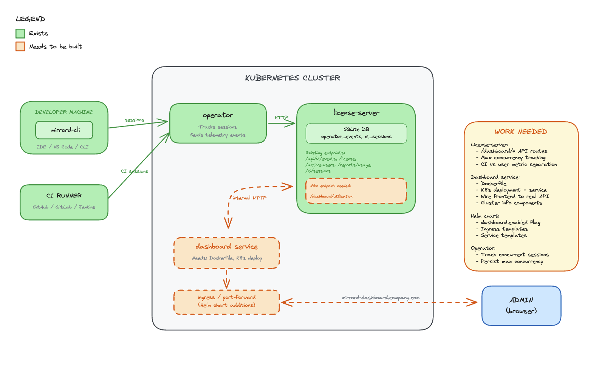

MetalBear RFCs - RFC Book
The “RFC” (request for comments) process provides a consistent path for proposing substantial changes
to MetalBear products (mirrord and future projects) so the team can align on technical direction.
Table of Contents
When you need to follow this process
You need to follow this process for “substantial” changes, including:
- Major new features or capabilities
- Significant architectural changes
- Breaking changes to APIs or user-facing behavior
- Changes that affect multiple components or teams
You don’t need an RFC for:
- Bug fixes
- Documentation improvements
- Refactoring that doesn’t change behavior
- Minor feature additions that don’t affect architecture
When in doubt, discuss with the team first.
What the process is
To propose a major change:
- Clone the RFC repository. Fork will not trigger PR preview workflow.
- Create a GitHub issue in the RFC repository
- In your branch
- Copy
0000-template.mdtotext/0000-my-feature.md(where “my-feature” is descriptive) - For static content like images, create a directory with the RFC handle, e.g.
text/0000-my-feature/diagram.png
- Copy
- Fill in the RFC with care - explain motivation, design, drawbacks, and alternatives
- Note: The reference-level explanation is optional before developing
- Submit a pull request and link it to the GitHub and Linear issues
- Assign reviewers whose comments you’re seeking
- Build consensus through discussion and iterate on feedback
- Collect at least two approvals before implementing
- If not already done, fill in the reference-level explanation while developing the proposed solution
- Before merging, rename your file to the next available RFC number in main (e.g.,
0042-my-feature.md)- Make sure to build and verify the generated Markdown pages
The RFC life-cycle
Once an RFC is “active”:
- Authors may implement it and submit PRs to the relevant repositories
- Being active means the RFC has at least guide-level explanation and at least two approvals
- The reference-level explanation must be completed and reviewed before merging
Minor changes to active RFCs can be made via amendments. Substantial changes should be new RFCs that reference the original.
Build and view
Prerequisites:
- Python3
- mdbook:
cargo install mdbook - mdbook-mermaid:
cargo install mdbook-mermaid
# generate artifacts
./generate-book.py
# start the mdbook server
mdbook serve
# Go to http://localhost:3000
License
This repository is licensed under the MIT License.
Contributions
Unless you explicitly state otherwise, any contribution submitted for inclusion shall be licensed under the MIT License, without additional terms or conditions.
0001-multi-cluster
- Feature Name:
multi_cluster - Start Date: 2026-01-09
- Last Updated: 2026-02-09
- RFC PR: metalbear-co/rfcs#0001
Summary
Enable developers to run mirrord against pods in any Kubernetes cluster they have access to, without switching their local kube context. Workflows that span across multiple clusters become available to use via mirrord.
Motivation
The Problem
Today mirrord only intercepts traffic within the active cluster. In HA or multi-cluster mesh environments, there is no guarantee where requests are routed. The current workaround is to run two separate sessions for two clusters and attach the debugger to the desired one. This is frustrating and unreliable.
Use Cases
Multi-region traffic testing: A developer wants to test their local service against traffic from pods running in us-east-1, eu-west-1, and ap-southeast-1 clusters simultaneously.
Centralized access: An organization’s security policy requires developers to connect through a central management cluster that has credentials to reach workload clusters. The developer’s machine cannot directly reach workload clusters.
Guide-level explanation
Demo Videos
Demo 1: mirrord Multi-Cluster for Kubernetes: Traffic Stealing (Primary + Remote)
Demo 2: mirrord Multi-Cluster for Kubernetes: Traffic Mirroring (Primary + Remote)
Demo 3: mirrord Multi-Cluster for Kubernetes: Postgres Test - Primary as Management-Only
Demo 4: mirrord Multi-Cluster for Kubernetes: Postgres Test - Direct Connection to Remote Cluster
Demo 5: mirrord Multi-Cluster for Kubernetes: Postgres Test - Primary as Default
Solution Overview
The design is built on the existing mirrord operator. Each operator supports both single-cluster and multi-cluster sessions. A private interface allows one cluster to coordinate sessions across others.
For multi-cluster sessions, a “primary” cluster drives sessions in remote clusters using their local operators over this private interface.
Understanding Cluster Roles
When setting up multi-cluster mirrord, each cluster takes on one or more roles. Understanding these roles is fundamental to understanding how the system works.
The Primary Cluster
The Primary cluster is where the user connects if he wants to use multi cluster. When a developer runs mirrord exec, their CLI talks to the Primary cluster’s operator. This is the “entry point” for all multi-cluster operations.
The Primary cluster runs a component we call the Envoy. The Envoy is an orchestrator - it doesn’t do the actual traffic interception work, but it coordinates all the clusters that do.
In single-cluster mirrord, there is no Envoy. The operator directly manages the session and agent. In multi-cluster, we need this extra layer because something has to coordinate multiple operators across multiple clusters.
Workload Clusters
Workload clusters are where your actual application pods run. These clusters have agents that intercept traffic, read files, capture environment variables, and do all the things mirrord normally does.
In single-cluster mirrord, the one cluster you connect to is the workload cluster. In multi-cluster, you define which clusters have workloads.
The Default Cluster
Some operations in mirrord are “stateful” - meaning they need to return consistent data. For example:
- Environment variables: If your app calls
os.Getenv("DATABASE_URL"), it should get ONE answer, not different answers from different clusters. - File operations: If the app reads
/etc/config.yaml, it should get ONE file, not a merge of files from multiple clusters. - Outgoing connections: If the app connects to a database, it should connect to ONE database.
- Database branching: If we create a database branch for testing, we create ONE branch, not one per cluster.
The Default cluster is the single cluster we designate to handle all these stateful operations. When your app does any of these operations, the request goes ONLY to the Default cluster’s agent.
In single-cluster mirrord, you don’t need to think about this - there’s only one cluster, so all operations go there. In multi-cluster, we need to explicitly choose one cluster to be the “source of truth” for stateful operations.
Management-Only Mode
Sometimes we want the Primary cluster to ONLY orchestrate, without running any workloads itself. This is called “Management-Only” mode.
Why would we want this? Consider a scenario where we have a management cluster that handles all our DevOps tooling, and separate clusters for our actual applications. The management cluster has the permissions to access all other clusters, but it doesn’t run the application pods.
In this case, we set PRIMARY_MANAGEMENT_ONLY=true. This means that we want only to orchestrate.
Important: If Primary is Management-Only, you MUST set a different cluster as Default. Because Management-Only means “no resources here”, but Default means “stateful operations happen here”. You can’t have stateful operations on a cluster with no resources.
Developer Experience
From a developer’s perspective, multi-cluster mirrord is completely transparent. Developers do not need to know which cluster is primary or which is the default. They use mirrord exactly the same way as single-cluster.
How Developers Use It
The workflow is identical to single-cluster:
-
Authenticate with the Primary cluster - The developer’s local machine is bound to it through their kubeconfig.
-
Run mirrord - Execute
mirrord exec ./myappas usual. -
The operator handles the rest - Based on the operator’s configuration, it determines whether to use single-cluster or multi-cluster mode.
The CLI automatically detects multi-cluster from the operator’s configuration and behaves accordingly. No special flags or configuration are needed from the developer.
What Developers Get
With multi-cluster enabled, developers benefit from:
-
Incoming traffic from all clusters - Traffic mirroring and stealing work across all workload clusters. If a request arrives at any cluster, the developer’s local app receives it.
-
Consistent environment - Environment variables, files, and database connections all come from one source (the Default cluster), ensuring predictable behavior.
-
Database branching - Branches are created once in the Default cluster and used consistently, regardless of which cluster handles traffic.
-
Single session - No need to manage multiple sessions or switch contexts. The complexity is hidden behind one session ID.
Configuration
The developer’s mirrord configuration file does not need any multi-cluster-specific settings:
{
"target": "deployment/myapp"
}
The operator determines single-cluster or multi-cluster mode based on its installation configuration, not the developer’s config file. This keeps the developer experience simple and consistent.
Installation
This section covers how to do the initial setup. The setup involves selecting a primary cluster, installing the operator with multi-cluster enabled, and configuring access to all remote clusters.
Authentication Methods
Each remote cluster must specify an authType that determines how the primary operator authenticates to it. This field is required — the Helm chart validates it at install time and fails if missing or not one of the supported values. There are three authentication methods:
-
EKS IAM (
authType: eks) — For AWS EKS clusters. The primary operator generates short-lived tokens using its IAM role (via IRSA). No secrets to manage — tokens are generated locally and auto-refreshed every 10 minutes. Requires an EKS Access Entry on each remote cluster andsa.roleArnon the primary operator. -
Bearer Token (
authType: bearerToken) — Uses ServiceAccount tokens that are automatically refreshed via the TokenRequest API. The operator auto-refreshes the token before expiration. A Secret with the initial token is needed on the primary cluster. -
mTLS (
authType: mtls) — For clusters that require client certificate authentication. You providetlsCrtandtlsKeyin the cluster Secret. Certificates are NOT auto-refreshed.
Remote Cluster Setup
Each remote cluster needs the mirrord operator installed with multiClusterMember enabled. This automatically creates the ServiceAccount, ClusterRole, and ClusterRoleBinding needed for the primary operator to manage sessions on that cluster.
Bearer Token / mTLS Clusters
Install the operator on the remote cluster:
--set operator.multiClusterMember=true
This creates a mirrord-operator-envoy ServiceAccount with the necessary permissions. After installation, generate an initial token for the primary cluster:
kubectl create token mirrord-operator-envoy -n mirrord --duration=24h
This initial token is only needed for the first setup. Once the primary operator starts, it automatically refreshes tokens using the TokenRequest API before they expire.
EKS IAM Clusters
EKS IAM auth lets the primary operator authenticate to remote EKS clusters using its IAM role instead of ServiceAccount tokens. No Secrets to manage — the operator generates short-lived tokens from its IAM identity.
Setup has two parts: AWS (IAM/EKS configuration) and Operator (Helm values).
AWS
1. Associate an OIDC Identity Provider with the primary cluster
The primary EKS cluster’s OIDC issuer must be registered as an IAM Identity Provider. This is what allows the operator pod to assume an IAM role via IRSA. Skip this if already done.
eksctl utils associate-iam-oidc-provider \
--cluster <PRIMARY_CLUSTER_NAME> --region <REGION> --approve
2. Create an EKS Access Entry on each remote cluster
This maps the operator’s IAM role to a Kubernetes group on the remote cluster. No IAM policy is attached — permissions come from Kubernetes RBAC.
aws eks create-access-entry \
--cluster-name <REMOTE_CLUSTER_NAME> \
--principal-arn arn:aws:iam::<ACCOUNT_ID>:role/<IAM_ROLE_NAME> \
--type STANDARD \
--kubernetes-groups mirrord-operator-envoy
3. Create (or update) the IAM role trust policy
The IAM role needs a trust policy that allows the primary operator’s ServiceAccount to assume it via IRSA. Replace the placeholders with your account ID and the OIDC issuer ID of the primary cluster.
{
"Version": "2012-10-17",
"Statement": [
{
"Effect": "Allow",
"Principal": {
"Federated": "arn:aws:iam::<ACCOUNT_ID>:oidc-provider/oidc.eks.<REGION>.amazonaws.com/id/<OIDC_ISSUER_ID>"
},
"Action": "sts:AssumeRoleWithWebIdentity",
"Condition": {
"StringEquals": {
"oidc.eks.<REGION>.amazonaws.com/id/<OIDC_ISSUER_ID>:sub": "system:serviceaccount:mirrord:mirrord-operator",
"oidc.eks.<REGION>.amazonaws.com/id/<OIDC_ISSUER_ID>:aud": "sts.amazonaws.com"
}
}
}
]
}
You can find the OIDC issuer ID from the primary cluster:
aws eks describe-cluster --name <PRIMARY_CLUSTER_NAME> --region <REGION> \
--query "cluster.identity.oidc.issuer" --output text
# Returns: https://oidc.eks.<REGION>.amazonaws.com/id/<OIDC_ISSUER_ID>
Note: The role doesn’t need any IAM policies (no
iam:*,s3:*, etc.). All permissions come from Kubernetes RBAC via the Access Entry. The trust policy only controls who can assume the role.
Operator
Remote clusters — install with the IAM group binding:
operator:
multiClusterMember: true
multiClusterMemberIamGroup: mirrord-operator-envoy
The multiClusterMemberIamGroup creates ClusterRoleBindings that grant the specified Kubernetes group the same permissions as the ServiceAccount-based setup. When set, the ServiceAccount-based ClusterRoleBindings are skipped since authentication comes from IAM instead of ServiceAccount tokens.
Primary cluster — set sa.roleArn so the operator pod can assume the IAM role via IRSA:
sa:
roleArn: "arn:aws:iam::<ACCOUNT_ID>:role/<IAM_ROLE_NAME>"
This annotates the operator’s ServiceAccount with eks.amazonaws.com/role-arn, which tells the EKS pod identity webhook to inject AWS credentials into the pod. The same IAM role is used for all EKS IAM remote clusters — each remote cluster maps that role via its own Access Entry (step 2 above).
RBAC — How Permissions Work
When the primary operator connects to a remote cluster, it needs permissions to do things there (list targets, create sessions, check health, etc.). These permissions are set up on each remote cluster using Kubernetes RBAC.
The chart creates two ClusterRoles (permission definitions):
-
mirrord-operator-envoy— Permissions for general operations: listing targets, managing parent sessions, syncing database branches, reading pods and deployments, and running health checks. -
mirrord-operator-envoy-remote— Permissions to create and manage childMirrordClusterSessionresources. This is what actually allows the primary operator to start mirrord sessions on a remote cluster. This ClusterRole is only granted on member clusters, not on the primary, because the primary never receives child sessions — it only creates them on remote clusters.
A ClusterRole by itself doesn’t grant anything — it only defines what actions are possible. To actually give those permissions to someone, we create ClusterRoleBindings that connect the ClusterRole to an identity.
All remote clusters need multiClusterMember=true. This is always required regardless of auth type. It tells the chart to create the ClusterRoles, the mirrord-operator-envoy ServiceAccount, and the ClusterRoleBindings that grant both roles to this ServiceAccount.
EKS IAM clusters additionally need multiClusterMemberIamGroup set (e.g., mirrord-operator-envoy). This tells the chart to also create ClusterRoleBindings that grant both roles to a Kubernetes Group instead of just the ServiceAccount. EKS maps the primary operator’s IAM role to this group via the Access Entry. When multiClusterMemberIamGroup is set, the ServiceAccount-based bindings are skipped because the identity comes from IAM, not from a ServiceAccount token.
So in practice:
- Bearer token / mTLS remote:
multiClusterMember=true - EKS IAM remote:
multiClusterMember=true+multiClusterMemberIamGroup=mirrord-operator-envoy
Primary Cluster Helm Configuration
Install the operator on the primary cluster with multi-cluster configuration. Each remote cluster requires an authType field. You can either:
- Provide cluster credentials directly in the Helm values (Helm creates the secrets automatically)
- Create the secrets manually and let the operator discover them
operator:
multiCluster:
# Enable multi-cluster mode
enabled: true
# Logical name of this cluster
clusterName: "primary"
# Default cluster for stateful operations (env vars, files, db branching)
defaultCluster: "staging-cluster"
# Set to true if primary cluster has no workloads (management-only)
managementOnly: true
# Cluster configuration
# Each key is the real cluster name as you know it (e.g. the EKS cluster name,
# the kube context name, etc.). The operator uses this name to identify the cluster.
clusters:
# Bearer token authentication
staging-cluster:
authType: bearerToken
server: "https://api.staging.example.com:6443"
caData: "LS0tLS1CRUdJTi..." # Base64-encoded CA certificate
bearerToken: "eyJhbGciOiJS..." # Initial token from `kubectl create token`
isDefault: true
# EKS IAM authentication
my-eks-cluster:
authType: eks
region: eu-north-1
server: "https://ABCDEF1234567890.gr7.eu-north-1.eks.amazonaws.com"
caData: "LS0tLS1CRUdJTi..." # Base64-encoded CA certificate (required for EKS)
# mTLS authentication
on-prem-cluster:
authType: mtls
server: "https://api.onprem.example.com:6443"
caData: "LS0tLS1CRUdJTi..." # Base64-encoded CA certificate
tlsCrt: "LS0tLS1CRUdJTi..." # Base64-encoded client certificate PEM
tlsKey: "LS0tLS1CRUdJTi..." # Base64-encoded client private key PEM
# Required for EKS IAM auth (see EKS IAM Clusters section above)
sa:
roleArn: "arn:aws:iam::<ACCOUNT_ID>:role/<IAM_ROLE_NAME>"
Note: The cluster key names in the
clustersmap should match the real cluster names. For EKS clusters this is especially important — the operator uses the key as the EKS cluster name when signing IAM tokens. EKS IAM clusters don’t need abearerToken(the operator generates tokens from its IAM role).
Where Data Is Stored
When you provide cluster configuration in the Helm values, the chart splits it into two places:
- ConfigMap (
clusters-config.yaml): non-sensitive cluster configuration —name,server,caData,authType,region,isDefault,namespace. - Secret (
mirrord-cluster-<name>): sensitive credentials only —bearerToken,tls.crt,tls.key. Only created if bearer token or mTLS credentials are provided.
For EKS IAM clusters, no Secret is created — everything is in the ConfigMap since authentication is through IAM.
Manual Secret Creation
Alternatively, you can create the Secret manually outside of Helm. The Secret must be labeled with operator.metalbear.co/remote-cluster-credentials=true and named mirrord-cluster-<cluster-name>. The cluster configuration (server, authType, etc.) still needs to be provided via Helm values or the clusters-config.yaml ConfigMap.
For Bearer Token authentication:
apiVersion: v1
kind: Secret
metadata:
name: mirrord-cluster-staging-cluster
namespace: mirrord
labels:
operator.metalbear.co/remote-cluster-credentials: "true"
type: Opaque
stringData:
bearerToken: "eyJhbGciOiJS..."
For mTLS authentication:
apiVersion: v1
kind: Secret
metadata:
name: mirrord-cluster-on-prem-cluster
namespace: mirrord
labels:
operator.metalbear.co/remote-cluster-credentials: "true"
type: Opaque
stringData:
tls.crt: "LS0tLS1CRUdJTi..." # Client certificate PEM
tls.key: "LS0tLS1CRUdJTi..." # Client private key PEM
Note: EKS IAM clusters do NOT need a Secret — they authenticate using the operator’s IAM role and only need the cluster configuration in the ConfigMap.
Verify the Connection
kubectl --context {PRIMARY_CLUSTER} get mirrordoperators operator -o yaml
You need to have something similar, that will show you the clusters that are available and their status. If they are successfully connected you will see license_fingerprint and operator_version, if not there will be an error field there.
apiVersion: operator.metalbear.co/v1
kind: MirrordOperator
metadata:
name: operator
spec:
copy_target_enabled: true
default_namespace: default
features:
- ProxyApi
license:
expire_at: "2026-08-07"
fingerprint: S1hgumDqNoyDarUX7k31ALtxcOuJ9qhlc+HfJQUV4CE
name: Oaks of Rogalin`s Enterprise License
organization: Oaks of Rogalin
subscription_id: 2c8d96be-c3bf-458c-9d35-a0642c2c2a77
operator_version: 3.137.0
protocol_version: 1.25.0
supported_features:
- ProxyApi
- CopyTarget
- CopyTargetExcludeContainers
- LayerReconnect
- ExtendableUserCredentials
- BypassCiCertificateVerification
- SqsQueueSplitting
- SqsQueueSplittingDirect
- MultiClusterPrimary
status:
connected_clusters:
- connected:
license_fingerprint: S1hgumDqNoyDarUX7k31ALtxcOuJ9qhlc+HfJQUV4CE
operator_version: 3.137.0
lastCheck: "2026-01-27T09:22:55.824115967+00:00"
name: remote-1
- connected:
license_fingerprint: S1hgumDqNoyDarUX7k31ALtxcOuJ9qhlc+HfJQUV4CE
operator_version: 3.137.0
lastCheck: "2026-01-27T09:22:55.766848498+00:00"
name: remote-2
copy_targets: []
sessions: []
statistics:
dau: 0
mau: 0
Token Refresh
Token refresh behavior depends on the authentication method:
Bearer Token (authType: bearerToken):
- On startup, the operator reads all cluster secrets and builds an in-memory connection for each cluster
- It parses the JWT token to determine its original lifetime (from
expandiatclaims) - It monitors the token expiration and requests new tokens using the TokenRequest API
- The refresh happens with a buffer before expiration to ensure uninterrupted connectivity
- New tokens maintain the same lifetime as the original token
You only need to generate tokens once during initial setup. The operator handles all subsequent renewals automatically.
EKS IAM (authType: eks):
- The operator generates a presigned
GetCallerIdentitySTS URL using its IAM role credentials (acquired via IRSA) - This presigned URL is base64-encoded and used as a Kubernetes bearer token (the
k8s-aws-v1.prefixed token format that EKS expects) - Tokens are regenerated every 10 minutes — well within the 15-minute presigned URL validity window
- No Secrets are involved — credentials come from the pod’s IAM role
mTLS (authType: mtls):
Certificates are NOT auto-refreshed. You are responsible for rotating the client certificate and key in the cluster Secret before they expire.
Reference-level explanation
The Parent-Child Session Model
In single-cluster mirrord, we have a Custom Resource (CR) called MirrordClusterSession. This represents a single mirrord session with a single agent in a single cluster. When the CLI connects, the operator creates this CR, spawns an agent, and the session is active.
In multi-cluster, we need something more. We introduce a new CR called MirrordMultiClusterSession. This is like a “parent” session that coordinates multiple “child” sessions.
Why Do We Need a Parent Session?
The CLI expects to interact with ONE session. It doesn’t want to manage multiple session IDs, multiple WebSocket connections, or worry about which cluster does what. From the CLI’s perspective, it’s just one mirrord session.
But internally, we need a session in each workload cluster. Each cluster needs its own MirrordClusterSession so that cluster’s operator can spawn an agent and handle requests like the usually does.
The parent MirrordMultiClusterSession presents one session ID to the CLI, while internally managing child sessions across multiple clusters.
This is different from single-cluster where one MirrordClusterSession is enough. In multi-cluster, the parent session acts as a coordinator of multiple child sessions, each of which looks like a normal single-cluster session to its respective operator.
The Naming Convention
Child sessions follow a simple naming pattern. If the parent session is called mc-4dbe55ab68bba16c, then the child sessions are named by appending the cluster name: mc-4dbe55ab68bba16c-remote-1 for the remote-1 cluster, mc-4dbe55ab68bba16c-remote-2 for remote-2, and so on.
This naming makes it easy to identify which parent a child belongs to, and makes cleanup straightforward since we can find all children by their prefix.
The MultiClusterSessionManager
The MultiClusterSessionManager is the controller that manages MirrordMultiClusterSession resources. It lives in the Primary cluster’s operator and is responsible for the entire lifecycle of multi-cluster sessions.
In single-cluster mirrord, session management is handled by the BaseController. The MultiClusterSessionManager follows similar patterns but adds the complexity of coordinating across clusters.
The Reconciliation Loop
The controller runs a “reconciliation” function whenever something changes. This function looks at the current state of a session and decides what to do next.
The session goes through several phases. It starts as “Initializing” when just created - this is when we need to create child sessions in all workload clusters and potentially create database branches. It moves to “Pending” once we’ve started creating child sessions but not all are ready yet. It becomes “Ready” when all child sessions are active. It can become “Failed” if something goes wrong, or “Terminating” when being deleted.
CR and In-Memory State
We maintain session state in two places: the MirrordMultiClusterSession CR and an in-memory DashMap. The CR is our source of truth - it survives operator restarts and is visible via kubectl. The in-memory map is a performance cache that avoids slow Kubernetes API calls when routing WebSocket messages. Every time the controller reconciles a session, it syncs the in-memory map from the CR, ensuring they stay consistent. When cleaning up, we always read from the CR status (not memory) because if the operator restarted, the memory would be empty but the CR still knows which child sessions exist.
The MultiClusterRouter
The MultiClusterRouter is one of the most important components in multi-cluster mirrord. It’s what makes multi-cluster feel like single-cluster to the CLI and intproxy.
What It Does
In single-cluster mirrord, the operator has a component called AgentRouter. The AgentRouter manages communication between the CLI/intproxy and the agent. It receives messages from the client, forwards them to the agent, and sends responses back. It presents an interface called AgentConnection which has a sender channel (to send messages to the agent) and a receiver channel (to receive messages from the agent).
The MultiClusterRouter does the same thing, but for multiple agents across multiple clusters. It presents the same AgentConnection interface, so the rest of the operator code doesn’t need to know it’s dealing with multi-cluster. This is intentional as we want to reuse as much existing code as possible.
How It Routes Messages
When the router receives a message from the client, it needs to decide where to send it. This decision is based on the type of operation.
Stateful operations - file reads/writes, environment variable requests, outgoing TCP/UDP connections, DNS lookups - go ONLY to the Default cluster. This ensures consistency. If the app reads an environment variable, it always gets the same answer because it always comes from the same cluster.
Traffic operations - things like mirror and steal requests - go to ALL workload clusters. This makes sense because traffic can arrive at any cluster, so all agents need to know about traffic interception rules.
The code that makes this decision is simple. We have a function is_stateful_operation that checks the message type:
pub fn is_stateful_operation(msg: &ClientMessage) -> bool {
matches!(
msg,
ClientMessage::FileRequest(_)
| ClientMessage::GetEnvVarsRequest(_)
| ClientMessage::GetAddrInfoRequest(_)
| ClientMessage::GetAddrInfoRequestV2(_)
| ClientMessage::Vpn(_)
)
}
pub fn is_outgoing_traffic(msg: &ClientMessage) -> bool {
matches!(
msg,
ClientMessage::TcpOutgoing(_) | ClientMessage::UdpOutgoing(_)
)
}Both stateful operations and outgoing traffic go to the Default cluster only. Outgoing traffic (TCP/UDP) is routed to one cluster to prevent duplicate responses — all clusters share the same external services, so one agent can handle all outgoing requests. Everything else (traffic mirroring/stealing, control messages) is broadcast to all workload clusters.
Merging Responses
Messages come back from multiple agents. The router merges all these responses into a single stream that goes back to the client. The client doesn’t know responses are coming from multiple sources - it just sees a stream of messages like it would in single-cluster.
Comparison with Single-Cluster
In single-cluster, the AgentRouter talks to one agent. In multi-cluster, the MultiClusterRouter talks to multiple operators (which each have their own agent). But both present the same AgentConnection interface. This means the LayerHandler and other components that use AgentConnection work unchanged in multi-cluster.
Connection Health and Ping-Pong
Each operator needs to know if the connection to its agent is still alive. It does this by sending Ping messages every few seconds. The agent responds with Pong. If the operator doesn’t receive a pong for 60 seconds, it assumes something is wrong and terminates the agent.
The Problem in Multi-Cluster
In multi-cluster, there are multiple operators (one per cluster), each with its own agent. The CLI sends ping messages, and the Primary operator’s router decides where to send them.
If pings only go to one cluster (the Default/Primary cluster), the other clusters never receive any pings. Their operators wait, receive nothing for 60 seconds, and then kill their agents. This is why remote agents were disappearing after exactly 60 seconds.
The Solution
Ping messages are broadcast to ALL clusters. Every cluster receives the ping, every agent responds with pong, and every operator knows its connection is alive. The CLI receives multiple pong responses (one per cluster), but that’s fine - it just means all clusters are healthy.
WebSocket Keep-Alive
The Primary operator also sends low-level WebSocket ping frames to each remote operator every 30 seconds. This keeps the network connection itself alive and helps detect if a remote cluster becomes unreachable.
The Session Lifecycle
Let’s walk through what happens from session creation to cleanup, comparing with single-cluster where relevant.
Step-by-Step Example
Here is the full flow of a multi-cluster session from start to finish. The developer runs mirrord exec ./myapp targeting deployment/myapp, with the Primary cluster configured to orchestrate two workload clusters (cluster-a and cluster-b), where cluster-a is the Default cluster.
Session Creation
- The developer runs
mirrord exec ./myapp. The CLI connects to the Primary cluster’s operator. - The CLI detects multi-cluster mode from the operator’s configuration. It does not resolve the target locally — target resolution happens later on each workload cluster.
- If the developer has database branching configured, the CLI creates branch CRs first, waits for them to be ready, and collects the branch names. See the Database Branching step-by-step below. If no branching is configured, this step is skipped.
- The CLI builds
ConnectParamscontaining branch names, SQS configuration, and other session parameters. It opens a request to the Primary operator to create a multi-cluster session. - The Primary operator creates a
MirrordMultiClusterSessionCR with phaseInitializingand returns the session ID to the CLI.
Initialization
- The
MultiClusterSessionManagercontroller sees the new CR and starts reconciliation. For anInitializingsession, it spawns a background task. - The background task iterates over the configured workload clusters (
cluster-aandcluster-b). For each cluster, it connects to that cluster’s operator using the configured authentication method (bearer token, EKS IAM, or mTLS). - On each workload cluster, the Primary operator creates a child
MirrordClusterSessionCR. The child session name follows the patternmc-<parent-id>-<cluster-name>(e.g.mc-4dbe55ab68bba16c-cluster-a). The child spec includes the target (deployment/myapp), namespace, andConnectParams. Branch names and SQS config are only forwarded to the Default cluster (cluster-a). - Each remote cluster’s operator processes the child CR as a normal single-cluster session — it resolves the target (finds the pod for
deployment/myapp), spawns an agent, and marks the child session asReady.
Session Becomes Ready
- As each child session becomes ready, the Primary operator updates the parent CR’s status with the child session name, cluster, and readiness.
- Once all child sessions are ready, the parent CR’s phase changes from
InitializingtoReady. - The CLI sees the session is ready and establishes a WebSocket connection to the Primary operator.
- The Primary operator creates a
MultiClusterRouterfor this session, which presents the sameAgentConnectioninterface as single-cluster.
Active Session
- Messages flow through the
MultiClusterRouter. Stateful operations (env vars, file reads, DNS, outgoing connections) go only to the Default cluster (cluster-a). Traffic operations (mirror/steal) are broadcast to all workload clusters (cluster-aandcluster-b). - A background heartbeat task updates the
connectedTimestampon the parent CR every 10 seconds. - Ping messages are broadcast to all clusters so every agent knows the connection is alive.
Session Cleanup
- The developer’s application exits. The WebSocket closes and the heartbeat task stops.
- The
connectedTimestampstops being updated. The controller reconciles and calculates the time since the last heartbeat. - After 60 seconds (the default TTL) without a heartbeat, the controller deletes the parent CR.
- Deleting the CR triggers the Kubernetes finalizer. The finalizer reads child session information from the CR status (not from memory, in case the operator restarted).
- For each child session, the Primary operator connects to the respective remote cluster and deletes the child
MirrordClusterSessionCR. The remote operator cleans up the agent. - After all children are deleted, the finalizer is removed from the parent CR and Kubernetes completes the deletion.
CLI Creates a Session
The user runs mirrord exec. The CLI sends a request to the Primary operator asking to create a multi-cluster session. The request includes the target alias (like “deployment.myapp”) and the mirrord configuration.
In single-cluster, the CLI sends a similar request, and the operator immediately creates a MirrordClusterSession and starts spawning an agent.
In multi-cluster, the operator creates a MirrordMultiClusterSession CR with phase “Initializing” and returns the session ID to the CLI. The actual work happens asynchronously.
Initialization
The controller sees the new CR and starts the reconciliation process. For an “Initializing” session, it spawns a background task to do the actual work.
Note: if the developer is using database branching, the branches are already created before session creation. The CLI creates branch CRs on the Primary cluster, the DbBranchSyncController syncs them to the Default cluster, and once ready the CLI receives the branch names back. The CLI then sends these branch names via ConnectParams when creating the session — the same flow as single-cluster. See the Database Branching section for details.
The controller creates child sessions in each workload cluster. For each cluster, it connects to that cluster’s operator and creates a MirrordClusterSession CR. The child session spec includes the target (which pod or deployment) and the namespace. Branch names and SQS configuration are passed via ConnectParams when the primary connects to each remote operator — the same mechanism the CLI uses in single-cluster.
We then wait for each child session to become ready, meaning its agent has spawned and is connected.
Parent Status Update
As each child session becomes ready, we update the parent CR’s status. The status contains a map of all child sessions with their names, readiness, and any errors. Once all children are ready, we set the parent’s phase to “Ready”.
In single-cluster, there’s no parent status to update - the single session’s status is enough.
CLI Connects via WebSocket
Once the session is Ready, the CLI establishes a WebSocket connection to the Primary operator. The operator looks up the session in the in-memory map and creates a MultiClusterRouter to handle message routing.
In single-cluster, the operator creates an AgentRouter instead. But both return an AgentConnection interface, so the code that handles the WebSocket doesn’t need to know the difference.
Active Session
While the session is active, the MultiClusterRouter routes messages to the appropriate clusters. Stateful operations go to the Default cluster. Traffic operations go to all workload clusters.
A background task periodically updates the connectedTimestamp in the CR. This happens every 10 seconds. This timestamp is our “heartbeat” - it tells the controller the session is still in use.
In single-cluster, a similar mechanism exists but uses an in-memory reference count (UseGuard). In multi-cluster, we use CR timestamps because they survive operator restarts and work in HA setups with multiple operator replicas.
Client Disconnects
When the application exits, the WebSocket closes. The heartbeat task stops updating connectedTimestamp.
TTL Expiration
The controller continues reconciling the session. On each reconciliation, it calculates how long since the last heartbeat. If more than 60 seconds have passed (the default TTL), it deletes the session CR.
In single-cluster, cleanup happens when the last UseGuard reference is dropped. In multi-cluster, we can’t rely on in-memory references because of HA and restarts, so we use TTL-based cleanup instead.
Cleanup via Finalizer
Deleting the CR triggers the finalizer. Kubernetes finalizers ensure cleanup code runs BEFORE the resource is actually deleted.
The cleanup process reads the child session information from the CR status - not from memory. This is important because if the operator restarted, the in-memory state would be empty, but the CR still knows which child sessions exist.
For each child session in the status, we connect to that cluster’s operator and delete the child MirrordClusterSession. The remote cluster’s operator then cleans up its agent.
After all children are deleted, the finalizer is removed from the CR, and Kubernetes completes the parent deletion.
In single-cluster, cleanup is simpler - just delete the one session and its agent.
Database Branching in Multi-Cluster
In single-cluster mode, this is straightforward: the CLI creates a branch CR, the operator creates a temporary database, and the developer’s application connects to it. In multi-cluster mode, this becomes more complex because the database can live on a different cluster than where the developer connects.
Step-by-Step Example (Primary != Default)
This is the most common multi-cluster database branching scenario. The developer connects to the Primary cluster, but the application that uses the database runs on the Default cluster (cluster-a). The developer has PostgreSQL branching configured in their mirrord.json.
Branch Creation
- The developer runs
mirrord exec ./myapp. The CLI reads themirrord.jsonconfiguration and sees that database branching is enabled for PostgreSQL. - The CLI calls
prepare_pg_branch_dbs(). This creates aPgBranchDatabaseCR on the Primary cluster with the branch spec (source database, owner, etc.). - The
DbBranchSyncControlleron the Primary cluster detects the newPgBranchDatabaseCR. - The sync controller creates a copy of this CR on the Default cluster (
cluster-a). - The Default cluster’s PostgreSQL branching controller detects the new CR and starts creating the branch — it spins up a temporary database pod and copies the schema/data from the source etc..
- Once the branch is ready, the Default cluster’s controller updates the CR status to
Readywith the branch name (e.g.postgres-test-pg-branch-5www5). - The sync controller detects the status change on the Default cluster’s CR and copies it back to the Primary cluster’s CR.
- The CLI’s
await_condition()polling loop sees the Primary CR status change toReady. - The CLI extracts the branch name from the CR status.
Passing Branch Names to the Session
- The CLI builds
ConnectParamscontainingpg_branch_names: ["postgres-test-pg-branch-5www5"]. - The CLI opens a WebSocket connection to the Primary operator with the
ConnectParamsencoded in the URL query string. - The Primary operator creates the
MirrordMultiClusterSessionCR and starts creating child sessions. - When creating the child session on the Default cluster (
cluster-a), the Primary operator forwards theConnectParamsincluding the branch names. Non-default clusters do not receive branch names.
Environment Variable Interception
- The developer’s application starts and reads
DATABASE_URLfrom the environment. - The
MultiClusterRouteron Primary routes thisGetEnvVarsRequestto the Default cluster only (stateful operation). - The Default cluster’s operator reads the real environment variables from the target pod, e.g.
DATABASE_URL=postgres://db.prod:5432/mydb. - The operator checks the session’s branch configuration and sees there is a PostgreSQL branch named
postgres-test-pg-branch-5www5. - The operator modifies the response:
DATABASE_URL=postgres://db.prod:5432/postgres-test-pg-branch-5www5. - The application receives the modified connection string and connects to the branch database instead of production — completely transparently.
Branch Cleanup
- The developer’s application exits. The session is cleaned up (see Session Lifecycle above).
- The branch’s TTL starts counting down. While the session was active, the TTL was continuously extended.
- After the TTL expires (e.g. 30 minutes), the Default cluster’s branching controller deletes the branch CR and cleans up the temporary database pod.
- The
DbBranchSyncControllerdetects the deletion on the Default cluster and deletes the corresponding CR on the Primary cluster.
Note: If Primary is the Default cluster some steps are skipped because the branching controllers run directly on Primary and process the CRs locally, just like single-cluster. The sync controller does not run.
How Database Branching Works in Single-Cluster
In single-cluster mirrord, the CLI has direct access to the Kubernetes cluster where the pod it’s connected to runs. When a developer configures database branching in their mirrord.json file, the CLI creates a CR such as PgBranchDatabase for PostgreSQL or MysqlBranchDatabase for MySQL etc… The operator watches for these CRs and responds by creating the branch. It spins up a temporary database pod and updates the CR’s status to indicate the branch is ready. The CLI waits for this status change before proceeding. Once the branch is ready, the operator knows to intercept environment variable requests from the application and modify database connection strings to point to the branch instead of the production database.
The Multi-Cluster Challenge
In multi-cluster mode, the developer’s CLI connects to the Primary cluster, but we don’t want to create the same branch on all child clusters so instead we only do that on the Default cluster. Also the Primary cluster can be a management-only cluster that orchestrates sessions but doesn’t host application workloads or resources. This creates a fundamental problem: the CLI cannot directly create branch CRs on the Default cluster because the developer only has access to the Primary cluster.
Configuration-Based Controller Deployment
Branching controllers only run on the cluster designated to handle stateful operations (the Default cluster). The CLI creates branch CRs on the Primary cluster, and how they are processed depends on the cluster configuration.
If Primary is the Default cluster, the branching controllers run locally on Primary and process the CRs directly. The CLI creates CRs, Primary’s branching controllers create the actual database branches, and everything happens on one cluster just like single-cluster mode.
If Primary is not the Default cluster, the branching controllers do not run on Primary. Instead, a synchronization controller on Primary mirrors the CRs to the Default cluster, where the actual branching controllers run and create the database branches.
The decision of which controllers to run is made at startup time based on configuration. When the operator starts, it loads the multi-cluster configuration and compares cluster_name (this cluster’s name) with default_cluster (where stateful operations happen):
- Single-cluster mode: Branching controllers run and handle everything locally. No sync controller is needed.
- Multi-cluster, Primary == Default: Branching controllers run on Primary. The
DbBranchSyncControllerdoes not run. - Multi-cluster, Primary != Default: Branching controllers do not run on Primary. Instead, the
DbBranchSyncControllerruns to sync CRs to the Default cluster where the actual branching controllers handle database creation.
The Database Branch Sync Controller
When Primary is not the Default cluster, the Primary cluster runs a controller called DbBranchSyncController. This controller watches for branch CRs on Primary and synchronizes them to the Default cluster. The controller supports PostgreSQL, MySQL, and MongoDB branches.
When the controller sees a new branch CR on the Primary cluster, it creates a copy of that CR on the Default cluster. The Default cluster’s branching controller (which runs only on Default) processes this CR and creates the actual database branch.
The synchronization is bidirectional for status. Once the Default cluster’s operator creates the branch and updates the CR’s status to indicate readiness, the sync controller copies that status back to the Primary cluster’s CR. This allows the CLI, which is watching the Primary cluster’s CR, to know when the branch is ready even though the actual creation happened on a remote cluster.
CLI
From the CLI’s perspective, multi-cluster database branching is identical to single-cluster. The CLI creates branch CRs on the cluster it has access to and waits for the status to become Ready or Failed. After creating the CRs, the CLI enters a waiting loop. It watches the CR status and waits for either a “Ready” or “Failed” phase. The waiting has a configurable timeout. If the branch doesn’t become ready within this timeout, the CLI fails.
Passing Branch Names to Sessions
Once the branches are ready, the CLI passes the branch names to the Primary operator via ConnectParams, the same way it works in single-cluster. The Primary operator forwards these params when creating the child session on the Default cluster. Branch names are not stored in the session CRs — they flow through the connection parameters just like in single-cluster mode.
Environment Variable Interception
In multi-cluster mode, this request is handled by the MultiClusterRouter. Because reading environment variables is a stateful operation (we want consistent answers regardless of which cluster handles the request), the router sends this request only to the Default cluster. This is the same cluster where the database branch was provisioned and where the session has the branch configuration in its ephemeral state.
The Default cluster’s operator receives the request and handles it with branch awareness. It reads the actual environment variables from the target pod, which might include something like DATABASE_URL=postgres://db.prod:5432/mydb. Before returning this to the application, the operator checks if there are any branch overrides configured for this session. If the session has a PostgreSQL branch named postgres-test-pg-branch-5www5, the operator modifies the response to return DATABASE_URL=postgres://db.prod:5432/postgres-test-pg-branch-5www5 instead.
The application receives this modified connection string and connects to the branch database, completely unaware that anything special happened. From the application’s perspective, it simply read an environment variable and got a database URL. The fact that this URL points to a temporary branch rather than the production database is invisible to the application code.
Branch Lifecycle and Cleanup
Database branches have a time-to-live (TTL) that controls how long they exist. In a typical configuration, a branch might have a TTL of 30 minutes, meaning it will be automatically deleted 30 minutes after the session that created it ends.
While the session is active, the branch’s TTL is continually extended. The branching controller watches for active sessions and extends the TTL as long as the session is alive. This prevents branches from expiring while a developer is still using them.
When the session ends (either because the developer’s application exited or because of a disconnection), the TTL extension stops. The branch continues to exist for its remaining TTL, giving the developer time to reconnect if needed. Once the TTL expires, the Default cluster’s branching controller deletes the branch and cleans up any associated resources.
In multi-cluster mode, we also need to handle cleanup of the Primary cluster’s CR. The DbBranchSyncController handles this through bidirectional deletion synchronization. If the Default cluster deletes a branch CR (due to TTL expiration), the sync controller detects this and deletes the corresponding CR on the Primary cluster. Similarly, if someone deletes the Primary cluster’s CR, the sync controller deletes the copy on the Default cluster. This ensures that both clusters stay consistent and that orphaned CRs don’t accumulate.
SQS Queue Splitting in Multi-Cluster
SQS queue splitting works across clusters. In single-cluster, the operator creates a temporary SQS queue, patches the target workload to consume from it, and filters messages based on the developer’s configuration. In multi-cluster, the same thing happens on each workload cluster — the operator on each cluster creates its own temporary queue and patches the local workload.
The primary operator passes the SQS split configuration (queue IDs and message filters) to each child session via ConnectParams. It also passes the sqs_output_queues map, which tells each cluster the temporary queue names created by other clusters. This allows the output queue routing to work across cluster boundaries.
Each workload cluster needs AWS credentials with SQS permissions to create and manage SQS queues. The operator uses the default AWS credential chain, so credentials can come from IRSA (sa.roleArn), the node’s IAM instance profile, EKS Pod Identity, or environment variables — whatever is available in the cluster. This is independent of the multi-cluster auth type — even if the cluster uses bearer token auth for the primary operator’s connection, it still needs its own AWS credentials for SQS operations.
Drawbacks
- Implementation complexity: Multi-cluster introduces several new components (Envoy, MultiClusterRouter, MultiClusterSessionManager, DbBranchSyncController) that increase the overall system complexity and maintenance surface.
- Operational overhead: Operators must be installed and maintained on every participating cluster. Authentication credentials (bearer tokens, mTLS certs, IAM roles) must be provisioned and managed.
- Failure domain expansion: A networking issue between the Primary and any remote cluster can disrupt the entire multi-cluster session, whereas single-cluster sessions are self-contained.
- Debugging difficulty: Troubleshooting spans multiple clusters, making it harder to diagnose issues compared to single-cluster where everything is local.
- Latency: Cross-cluster communication adds latency to message routing, especially for stateful operations that must round-trip to the Default cluster.
Rationale and alternatives
- Why a Primary-orchestrated model? The Primary cluster acts as a single entry point, which keeps the developer experience unchanged — developers only need access to one cluster. Alternatives like a mesh-based approach (where clusters discover each other peer-to-peer) were considered but would require more complex networking setup and would expose multi-cluster complexity to the developer.
- What if we don’t do this? Developers working in multi-cluster environments would continue to manually manage separate mirrord sessions per cluster, which is error-prone, unreliable, and does not support cross-cluster traffic interception.
0002-dashboard-backend
- Feature Name: dashboard_backend
- Start Date: 2026-02-02
- Last Updated: 2026-02-17
- RFC PR: metalbear-co/rfcs#8
- RFC reference:
Summary
Deploy the Admin Dashboard as an in-cluster service alongside the mirrord operator. Usage data is stored in a SQLite database inside the license-server, which exposes it over an internal cluster HTTP API. The dashboard frontend is served through a Kubernetes ingress on the customer’s own domain.
Motivation
Enterprise customers need visibility into mirrord usage across their organization. Currently:
- No centralized dashboard - Usage data exists in the operator but isn’t easily accessible to admins
- Customer demand - Customers are asking for UI visibility into user activity
- Adoption tracking - Cost controllers need to justify mirrord investment with concrete usage metrics
- Current workaround - Users are directed to DataDog dashboards, which requires additional setup
Use Cases
- IT Admin wants to see how many developers are actively using mirrord this month
- Cost Controller wants to calculate time saved to justify license renewal
- Team Lead wants to identify power users for internal champions program
- Security Team wants to audit which users accessed the cluster via mirrord
Guide-level explanation
The Admin Dashboard is deployed inside the customer’s Kubernetes cluster as part of the mirrord operator Helm chart. Admins access it through a configured ingress (e.g., mirrord-dashboard.company.com).
Deployment
helm upgrade mirrord-operator metalbear/mirrord-operator \
--set dashboard.enabled=true \
--set dashboard.ingress.enabled=true \
--set dashboard.ingress.host=mirrord-dashboard.company.com
All-Time Metrics Section
Cluster & Version Info:
- Connected cluster name - Shows which Kubernetes cluster the admin is currently viewing
- Operator version - Shows the installed mirrord operator version and helm chart version
- Tier - Deferred from initial release (always Enterprise for now). Will be added when the dashboard ships to other tiers
- Check for updates button - Redirects the admin to the charts CHANGELOG in a new tab
Usage Metrics:
- Developer time saved - Total developer time saved from mirrord sessions since adoption, as calculated in the ROI calculator
- CI waiting time saved - Total CI waiting time saved by mirrord, as calculated in the ROI calculator
- Licenses used / acquired - Seat usage vs. total available licenses
- Active user sessions - Number of currently active user sessions
- Active CI sessions - Number of currently active CI sessions
- “Learn more about CI” link - Help link for CI usage (hidden on Teams tier), opens CI docs in a new tab
- Max user concurrency - Peak concurrent user sessions since mirrord adoption
- Max CI concurrency - Peak concurrent CI sessions since mirrord adoption
- Total session time - Total time spent across all sessions, shown in human-readable form (years, months, weeks)
Adjust Calculation (ROI Calculator):
- Entry point to configure how time-saved values are calculated, opens a modal with:
- Number of all user sessions since adoption (display rounded up: tens up to 100, hundreds above 100, e.g. “1.1K sessions”)
- Input for estimated time saved per user session (default: 15 min, no negative values)
- Number of all CI sessions since adoption (same rounding rules as user sessions)
- Input for estimated time saved per CI session (default: 15 min, no negative values)
- Preview of the calculated total time saved in hours
Timeframe Data Section
- Date range picker (default: current month)
- Refresh button for real-time updates
Usage Analytics Section
- Bar chart of top active users
- Pie chart of user activity distribution
- Toggle between session time vs session count
User Activity Table
- Paginated list (20 users/page)
- Columns: Machine ID, Active Since, Last Session, Total Time, Sessions, Avg Duration
API Endpoints
The license-server exposes dashboard data over internal cluster HTTP. No additional authentication is needed between dashboard and license-server — both services run in the same namespace, and access control is handled at the ingress/port-forward level via K8s RBAC. The dashboard nginx proxy injects the x-license-key header for backend authentication.
GET /api/v1/reports/usage?format=json&from=<datetime>&to=<datetime>
Response: UsageReportJson
The ?format=json parameter was added to the existing usage report endpoint (which already supports debug and xlsx formats), avoiding a new route.
Reference-level explanation
Architecture

Components
License-server (SQLite DB)
- Stores all usage metrics, session history, and license data in SQLite (PostgreSQL migration planned for a future iteration — see Future possibilities)
- Receives data from the operator over an air-gapped internal connection
- Exposes a REST API over internal cluster HTTP for the dashboard to consume
Dashboard (React frontend)
- Lives in the operator repo, deployed as a container in the cluster
- Served through a Kubernetes ingress on the customer’s domain
- Calls the license-server API to fetch usage data
- No external dependencies - all data stays in the cluster
Operator
- Connects to the license-server via air-gapped channel
- Sends session and usage data to the license-server for persistence
Data Flow
- Operator tracks mirrord sessions and reports data to license-server (air-gapped)
- License-server persists usage data in SQLite
- Dashboard frontend calls license-server API over internal cluster HTTP
- License-server returns usage metrics from SQLite
- Dashboard renders metrics in the browser
Existing Operator Endpoints
Active Users (license.rs):
pub struct ApiActiveUser {
user_license_hash: String,
kubernetes_username: Option<String>,
client_hostname: Option<String>,
client_username: Option<String>,
last_seen: Option<DateTime<Utc>>,
}Usage Reports (reports.rs):
pub struct RecordClientCertificate {
pub machine_id: String,
pub first_active: Option<String>,
pub last_seen: Option<String>,
pub total_session_time_in_days: Option<f64>,
pub total_session_count: Option<i64>,
pub average_session_duration_in_days: Option<f64>,
pub average_daily_sessions: Option<f64>,
}Frontend Data Model
All API response fields use camelCase serialization via #[serde(rename_all = "camelCase")].
interface UsageReportJson {
generalMetrics: {
totalLicenses: number | null;
tier: string;
activeUsers: number;
reportPeriod: { from: string; to: string };
operatorVersion: string | null;
lastOperatorEvent: string | null;
};
allTimeMetrics: {
totalSessionCount: number;
totalSessionTimeSeconds: number;
totalCiSessionCount: number;
};
ciMetrics: {
currentRunningSessions: number;
maxConcurrentCiSessions: number;
totalCiSessions: number;
avgCiSessionDurationSeconds: number | null;
};
userMetrics: UserMetric[];
}
All-time metrics are separated into their own field to avoid mixing range-scoped and lifetime data.
Implementation Status
The backend and frontend are implemented across two PRs:
- operator#1261 — Adds
?format=jsonto the existing usage report endpoint,UsageReportJsonresponse type, all-time metrics, CI metrics separation, error handling with proper status codes - operator#1262 — Dashboard React frontend with nginx reverse proxy to license-server
Files Created/Modified
operator/dashboard/ (new):
- React app with nginx reverse proxy configuration
nginx.conf.template— proxies/api/to license-server, injectsx-license-keyheader- Dockerfile for the dashboard container
license-server:
state/reports.rs—get_usage_report_json()query with all-time metrics, CI separation, user metricserror.rs— JSON error responses with proper HTTP status codes andstd::error::Reportformatting
metalbear-api:
types/src/dashboard.rs—UsageReportJson,GeneralMetrics,AllTimeMetrics,CiMetrics,UserMetrictypestypes/src/lib.rs—ApiUsageReportFormatextended withJsonvariantroutes/reports.rs— JSON format match arm in usage report handler
Drawbacks
- Customer infrastructure - Dashboard runs on customer’s cluster resources
- Multi-cluster depends on shared license server - Cross-cluster aggregation works when operators share a license server instance, but customers who run separate license servers per cluster won’t get a unified view
- Ingress setup - Requires customer to configure ingress and DNS
- Data locality - Usage data stays in the cluster, MetalBear cannot access it for support
- Enterprise-only - Creates feature disparity between tiers
Rationale and alternatives
Why in-cluster with SQLite?
Chosen: Dashboard in the operator repo, SQLite in license-server, served via ingress
- Data stays in the customer’s cluster (privacy, compliance)
- No dependency on MetalBear cloud for dashboard functionality
- Works in air-gapped environments
- SQLite is simple, zero-config, and sufficient for the initial iteration
- License-server already exists and has the trust relationship with the operator
- PostgreSQL migration is planned for a future iteration to support admin-managed backup policies and better scalability
Alternatives Considered
Alternative A: Backend in app.metalbear.co (previous RFC)
- Pros: Multi-cluster aggregation, existing Frontegg auth
- Cons: Data leaves the cluster, depends on MetalBear cloud availability, network latency
- Rejected: CEO decision to keep data in-cluster
Impact of not doing this
- Customers continue relying on DataDog/Grafana setup (friction)
- No native visibility into mirrord usage
- Harder to justify ROI for license renewals
Prior art
DataDog Dashboard (current workaround)
- Operator exports Prometheus metrics that DataDog can scrape
- Requires customer to have DataDog and configure the integration
- Works but adds friction for customers without existing DataDog setup
Resolved questions
- Historical data retention - Data is retained for 5 years. In the future, users will be able to configure retention since the data lives on their infrastructure (per @liron-sel).
- Time saved calculation - ROI calculator stays as-is. Users set their own estimated time-saved-per-session values (per @gememma, @liron-sel).
- Subscription tier display - Dropped from initial release since all dashboard customers are Enterprise. Will be added when the dashboard ships to other tiers (per @liron-sel).
- Multi-cluster aggregation - The license server is intended to be shared across operators in multiple clusters, so the dashboard already provides cross-cluster aggregation by default. Customers can also choose one license server per cluster if they prefer (confirmed by @aviramha, @Razz4780).
- Auth between dashboard and license-server - No additional auth needed. Both services run in the same namespace, access control is at ingress level (confirmed by @Razz4780).
- Data backup - Deferred to PostgreSQL migration. Admins will manage their own backup policies (per @aviramha).
Unresolved questions
- Ingress TLS - Should we provide cert-manager integration out of the box?
- RBAC - Should dashboard access be gated by Kubernetes RBAC beyond port-forward/ingress access?
Future possibilities
- PostgreSQL migration - Migrate from SQLite to PostgreSQL to support admin-managed backup/disaster recovery policies and better scalability at high session volumes (per @aviramha’s recommendation)
- Multi-cluster view - For customers running separate license servers per cluster, provide a unified view that aggregates across instances
- IDE Integration - Launch dashboard from VS Code/IntelliJ extension
- Alerts - Notify admins when license utilization exceeds threshold
- Cost attribution - Break down usage by team/department
- Trend analysis - Week-over-week, month-over-month comparisons
- Custom reports - Scheduled email reports to stakeholders
- API access - Allow customers to query usage data programmatically
0003-mirrord-magic
- Feature Name: mirrord Magic
- Start Date: 2026-02-13
- Last Updated: 2026-02-13
- RFC PR: metalbear-co/rfcs#11
Summary
Add new configuration field under the root config, called “magic”. “magic” would cover features that are enabled by default that help 99% of the users, but might annoy the other 1%. They are magic because they’re not specific use of a feature, but a combination of mirrord features to make a use case easier.
Motivation
Take the use case of using AWS CLI within mirrord. To work properly, it requires:
- unset AWS_PROFILE (and other related env)
- make ~/.aws not found - that specifically was broken in last AWS cli version it seems, so new implementation would be “make tmpdir, use mapping to send aws there”
I anticipate as mirrord gets more edge use cases, we’d have more “magic” logic that we can’t explain into a specific feature, so we can bundle it as a “magic”
Another example would be the Santa cheats I implemented.
Guide-level explanation
User wants to run mirrord exec -t deployment/lala -- bash then aws sts get-caller-identity. We’d like that to work out of the box.
Then, for another user that does something very specific, they’d like to actually use local AWS credentials, so they’d do
{
"magic": {
"aws": "true"
}
}
Would lead to
{
"feature": {
"fs": {
"mapping": {"/Users/aaa/.aws": "/tmp/aws/$0"}
},
"env": {
"unset": ["AWS_PROFILE"]
}
}
}
As we add more features, we’ll enable also "magic": false to turn off all magic.
Reference-level explanation
Add new field under root config called magic. Start with aws magic feature. Have a very full explanation of what the magic does and how it works.
“magic” bundles might change existing configurations that user edits, and one of the motivations behind having those as magic bundles is that
we can alter the configuration in runtime, i.e if user uses feature.env.unset the feature would just magically append it’s value to it, instead of conflicting.
“magic” shouldn’t handle all unknowns or scenarios, and by nature is very specific, so conflicts should be seldom. We’d like to be in a situation where magic works 100% for 90% of our user base, where the other 10% can workaround it with disabling it.
Drawbacks
- Can be hard for users to find themselves
- Testing the magic implementations would be hard
Rationale and alternatives
What other designs have been considered and what is the rationale for not choosing them?
- Just implement the magic with defaults for existing features. Can be complex, and overriding the logic would be hard.
Prior art
Unresolved questions
Future possibilities
0004-local-api
- Feature Name: local_api
- Start Date: 2026-03-13
- Last Updated: 2026-03-17
- RFC PR: metalbear-co/rfcs#20
- RFC reference:
- Implementation:
- Backend PR: metalbear-co/mirrord#4039
- Frontend PR: metalbear-co/mirrord#4040
- Linear: PRO-74 (parent), PRO-73 (Phase 1), PRO-65 (Phase 2)
- Related: COR-392 (mirrord Control API)
Summary
Add a local session monitoring system to mirrord with two components: (1) each intproxy exposes a Unix socket or named pipe (using axum) at ~/.mirrord/sessions/ with an HTTP API that provides session info and streams real-time events via SSE, and (2) a mirrord ui command that discovers all active session sockets, aggregates them into a unified REST API and WebSocket, and serves a React web UI over localhost. The config flag is api: true (defaults to enabled). The system works for all users (OSS and Teams) with no operator dependency.
Motivation
mirrord is a “black box” to its users. When a developer runs mirrord exec, they see their application start, but have no visibility into what mirrord is doing behind the scenes. This creates problems:
-
Debugging is blind - When something doesn’t work (wrong file served, missing env var, traffic not arriving), developers have no way to see what mirrord stole, what it forwarded remotely, and what fell back to local.
-
No session awareness - Developers don’t know if their session is healthy, how much traffic is flowing, or which remote resources they’re accessing.
-
Configuration is guesswork - Users set up mirrord configs (file filters, port subscriptions, outgoing filters) without feedback on whether the config is doing what they intended.
-
No growth surface - mirrord has no UI surface where we can show the value of Teams features to OSS users. The admin dashboard only reaches paying customers who have the operator.
-
No programmatic access - AI coding agents and scripts cannot query mirrord session state.
Use Cases
-
Developer debugging - “My app isn’t getting the right config. Let me open
mirrord uito see which files are being read remotely vs locally.” -
Multi-session overview - “I have 3 mirrord sessions running in different terminals. Let me see them all in one place.”
-
Traffic inspection - “I’m stealing traffic on port 8080 but nothing’s arriving. Let me check if the port subscription is active.”
-
Environment debugging - “My app is connecting to the wrong database. Let me check which env vars mirrord fetched.”
-
Session management - “I forgot to close a mirrord session in another terminal. Let me kill it from the UI.”
-
AI agent integration - An AI coding agent queries the UI API to check session health after a test run.
Guide-level explanation
Starting the UI
The Session Monitor is a separate command, not auto-launched:
$ mirrord ui
Session Monitor: http://localhost:59281
Opening browser...
In IDEs, the command is available as “mirrord: Open UI” which opens the UI in a webview or starts mirrord ui if not running.
This starts a local web server that discovers and connects to all active mirrord sessions on the machine.
sequenceDiagram
participant User
participant CLI as mirrord exec
participant Intproxy
participant Socket as ~/.mirrord/sessions/<id>.sock
participant UI as mirrord ui
participant Browser
User->>CLI: mirrord exec -- node server.js
CLI->>Intproxy: starts intproxy
Intproxy->>Socket: creates Unix socket / named pipe
Note over Intproxy,Socket: axum HTTP server listening on socket
User->>UI: mirrord ui
UI->>Socket: scans ~/.mirrord/sessions/ for .sock files
UI->>Socket: GET /info (for each socket)
Socket-->>UI: SessionInfo JSON
UI->>Browser: opens http://localhost:59281?token=<secret>
Browser->>UI: GET / (loads React frontend)
Browser->>UI: WS /ws (WebSocket upgrade with token)
UI-->>Browser: {"type":"sessions","data":[...]}
Viewing Sessions
The UI shows all active sessions in one view, with each session displaying its target, runtime, ports, traffic stats, and quick actions (View Details). Kill Session is planned for v2.
Clicking “View Details” on a session expands it to show a real-time event log (file ops, DNS, network, errors). Additional detail views (traffic stats, file operations, DNS queries, port subscriptions, env vars, outgoing connections, config) to be discussed in later PRs.
Configuration
In mirrord.json:
{
"api": true
}
api(default:true): Controls whether the intproxy creates a Unix socket (or named pipe on Windows) for this session. When disabled, the intproxy will not create a socket file.
The mirrord ui command has its own flags:
mirrord ui # Start UI, auto-open browser
mirrord ui --no-open # Start UI, don't open browser
mirrord ui --port 8080 # Use specific port
mirrord ui --sessions-dir /path # Custom sessions directory
Interaction with Existing Features
The session monitoring system is purely observational for v1. It does not modify mirrord’s behavior. The kill endpoint (POST /kill) is planned for v2.
The intproxy lifecycle is extended slightly:
- On startup, the intproxy creates a Unix socket (or named pipe on Windows) at
~/.mirrord/sessions/<session-id>.sock - On shutdown, it removes the socket file
- Socket files are cleaned up automatically when no file descriptor references remain (standard Unix socket behavior). Additionally,
mirrord uidetects stale sockets (connection refused) and removes them on startup
Reference-level explanation
Architecture Overview
The system has two layers: session sockets (per-intproxy) and the aggregator/UI server (mirrord ui).
flowchart TD
A["**intproxy A**\nnode server.js → checkout-svc"]
B["**intproxy B**\npython worker.py → payments-svc"]
C["**intproxy C**\ngo run main.go → auth-svc"]
subgraph unix ["Unix: ~/.mirrord/sessions/"]
S1["aaa111.sock"]
S2["bbb222.sock"]
S3["ccc333.sock"]
end
subgraph windows ["Windows: named pipes"]
P1["\\.\pipe\mirrord-aaa111"]
P2["\\.\pipe\mirrord-bbb222"]
P3["\\.\pipe\mirrord-ccc333"]
end
A -->|"creates (Unix)"| S1
B -->|"creates (Unix)"| S2
C -->|"creates (Unix)"| S3
A -->|"creates (Windows)"| P1
B -->|"creates (Windows)"| P2
C -->|"creates (Windows)"| P3
unix -->|"reads .sock files\ncalls GET /info on each"| W
windows -->|"reads pipe names\ncalls GET /info on each"| W
W["**mirrord ui**\nMerges all sessions into one API\nlocalhost:59281\nGET /api/sessions → returns all 3 sessions"]
W --> UI["**Web UI**\n(React)"]
W --> EXT["**Browser Ext.**\n(Chrome)"]
Component 1: Session Socket (in intproxy)
Each intproxy instance creates a Unix domain socket (or named pipe on Windows) at ~/.mirrord/sessions/<session-id>.sock on startup, serving an HTTP API via axum.
Session ID: A single session ID is used everywhere (local socket filename, API responses, and operator). For Teams users (with operator), the OperatorSession.id is reused for the local socket filename. For OSS users (no operator, DirectKubernetes path), a UUID is generated in execution.rs at startup. In both cases, the session ID is passed to the intproxy via the MIRRORD_SESSION_ID environment variable.
Socket directory: ~/.mirrord/sessions/ is created with 0700 permissions (user-only access), following the Docker socket model. Socket files are created with 0600 permissions. This ensures only the current user can access their own sessions.
Socket server architecture: The socket server runs as a separate tokio task inside the intproxy (not in the main task). Events are distributed via a broadcast channel (bounded, capacity 256). Events are emitted via MonitorTx::emit() which is fire-and-forget. If the broadcast channel is full, new events replace old ones. If the socket server task crashes, the intproxy continues running normally.
HTTP API on the Unix socket (per-session, served by axum over ~/.mirrord/sessions/<id>.sock, not exposed over TCP):
GET /health → Health check (returns 200 OK)
GET /info → Session info (returns SessionInfo JSON)
GET /events → SSE stream of MonitorEvents
POST /kill → Kill session (planned for v2, not implemented in v1)
SessionInfo (returned by GET /info):
pub struct ProcessInfo {
pid: u32,
process_name: String,
}
pub struct SessionInfo {
session_id: String,
target: String,
started_at: String, // ISO 8601
mirrord_version: String,
is_operator: bool,
processes: Vec<ProcessInfo>, // sessions can have multiple processes/PIDs
config_path: Option<String>, // path to the mirrord config file used for this session
}Note: Fields like
modeandfilterare intentionally omitted. The session’s steal/mirror mode, traffic filters, and other settings can be read from the config file atconfig_path.
sequenceDiagram
participant Layer as Layer (in user app)
participant Intproxy
participant Broadcast as Broadcast Channel
participant SSE as SSE Stream (socket)
participant UI as mirrord ui
participant WS as WebSocket
participant Browser
Layer->>Intproxy: request (e.g. file read, DNS query)
Intproxy->>Intproxy: processes request
Intproxy->>Broadcast: MonitorTx::emit(MonitorEvent)
Broadcast->>SSE: event pushed to SSE stream
SSE->>UI: SSE event received
UI->>WS: forward as {"type":"event","session_id":"...","data":{...}}
WS->>Browser: WebSocket message
Browser->>Browser: React UI updates in real-time
Note: v1
MonitorEvents represent what the client/layer requested (outbound from the client’s perspective), not agent responses. For example, aFileOpevent means the layer asked to read a file remotely, not that the agent returned data. Agent-side response events (latency, errors, payloads) are planned for v2.
MonitorEvent (streamed via SSE on GET /events):
#[derive(Serialize)]
#[serde(tag = "type")]
pub enum MonitorEvent {
FileOp {
path: String,
operation: String, // "read", "write", "stat", "unlink", "mkdir", etc.
},
DnsQuery {
host: String,
},
OutgoingConnection {
address: String,
port: u16,
},
PortSubscription {
port: u16,
mode: String, // "steal", "mirror"
filter: Option<String>, // HTTP filter expression, if configured
},
EnvVar {
vars: Vec<(String, String)>, // key-value pairs of fetched env vars
},
LayerConnected {
pid: u32,
},
LayerDisconnected,
}Event emission: Events are emitted at various points in the intproxy by calling MonitorTx::emit(). This method is fire-and-forget: it sends the event into the broadcast channel without waiting for any consumer. If no client is connected to the SSE stream, events are simply dropped.
Cleanup: On intproxy exit (normal or crash), the socket file should be removed. The intproxy registers a shutdown hook to delete the file. Unix socket files are also cleaned up by the OS when no file descriptor references them. For additional safety, mirrord ui detects stale sockets (connection refused) and removes them on startup.
Component 2: Aggregator (mirrord ui)
A new subcommand that runs a web server aggregating all local sessions.
Startup sequence:
- Scan
~/.mirrord/sessions/for*.sockfiles - For each, attempt to connect and call GET /info
- Clean up stale entries (socket exists but connection refused — sock files with no fd references are already cleaned by the OS)
- Start HTTP server on
127.0.0.1:<port> - Print URL:
http://localhost:59281 - Open browser (unless
--no-open) - Watch
~/.mirrord/sessions/directory for new/removed sockets or named pipes (vianotifycrate or polling) - For each connected session socket, maintain a tokio task that reads the SSE stream and forwards events to WebSocket clients
Security model:
flowchart TD
A["Layer 1: File System\nsessions dir 0700 · socket files 0600 · user-only"] --> B["Layer 2: Network\n127.0.0.1 only · no remote access"] --> C["Layer 3: Token Auth\nsecret in URL → cookie → required for WebSocket"] --> D["Layer 4: CSRF / XSS\nOrigin header validation · CSP script-src self"]
- Unix socket permissions:
~/.mirrord/sessions/has0700, socket files have0600. Only the user can access their sessions. Same model as Docker’s/var/run/docker.sock. - Localhost binding:
127.0.0.1only, never0.0.0.0. - WebSocket authentication: On startup,
mirrord uigenerates a secret token and includes it as a query parameter in the URL opened in the browser (e.g.,http://localhost:59281?token=<secret>). The frontend stores this token as a cookie. All WebSocket upgrade requests must include this token (via cookie or query param). This prevents other local applications from connecting to the WebSocket without the token. - CSRF protection: The API validates the
Originheader on all mutating requests (POST /kill, etc.) to ensure they originate from the expected localhost origin. - XSS protections: The embedded React frontend is served with
Content-Security-Policyheaders restricting script sources to'self'only. No inline scripts are allowed.
HTTP endpoints (browser-facing, served by mirrord ui on localhost:59281):
GET / → Serve React frontend (index.html)
GET /assets/* → Static JS/CSS assets
GET /api/sessions → List all active sessions (JSON)
GET /api/sessions/:id → Session detail + current state (JSON)
POST /api/sessions/:id/kill → Kill session (planned for v2, forwards to socket's POST /kill)
GET /api/version → mirrord version, OSS/Teams status
WS /ws → WebSocket: aggregated events from all sessions
WS /ws/:id → WebSocket: events from a specific session
WebSocket protocol (browser-facing):
Client connects to /ws
→ Server sends: {"type":"sessions","data":[...list of all sessions with state...]}
→ Server streams: {"type":"event","session_id":"a8f3b2c1","data":{...MonitorEvent...}}
→ Server streams: {"type":"session_added","data":{...session metadata...}}
→ Server streams: {"type":"session_removed","session_id":"a8f3b2c1"}
...
Static asset embedding: The React frontend is embedded in the mirrord CLI binary using rust-embed. The mirrord ui command serves these assets. If running a development build without embedded assets, it can optionally proxy to a Vite dev server (configurable via --dev flag).
Multi-Session Data Flow
Session 1 intproxy ──Unix Socket/Named Pipe──┐
│
Session 2 intproxy ──Unix Socket/Named Pipe──┼──► mirrord ui ──HTTP+WS──► Browser
│
Session 3 intproxy ──Unix Socket/Named Pipe──┘
The mirrord ui process maintains a HashMap<SessionId, SessionConnection> where each SessionConnection is a tokio task reading from the Unix socket’s (or named pipe’s) SSE stream and forwarding events to the WebSocket broadcast channel.
When a new socket appears in ~/.mirrord/sessions/, mirrord ui connects to it automatically. When a socket disappears (session ended), the corresponding task is cleaned up and a session_removed event is sent to WebSocket clients.
Performance Impact
On the intproxy (per session):
- CPU: Serializing MonitorEvents to JSON adds ~1% overhead (serde_json per event)
- Memory: Broadcast channel bounded at capacity 256
- I/O: Unix socket writes are negligible (local IPC)
- When no client is connected: events are dropped (broadcast channel with no receivers)
On mirrord ui:
- Aggregates events from all sessions. Memory scales linearly with number of active sessions.
- WebSocket broadcasts to browser clients add minimal overhead.
When disabled (api: false):
- Zero overhead. No socket file created, no event tracking in intproxy.
Version and License Display
The UI header shows:
- mirrord version (compiled into the binary)
- OSS vs Teams status (detected by checking if operator is configured/reachable)
- If Teams: subscription tier and license info (fetched from operator)
- If OSS: “Upgrade to Teams” CTA
Drawbacks
-
Two-process model:
mirrord uiis a separate process from the intproxy. Users must explicitly run it. This is intentional (following Aviram’s architecture), but some users may expect auto-launch. -
Platform-specific IPC: Unix sockets are used on macOS/Linux; named pipes on Windows. Both are supported but the implementation requires platform-specific code paths.
-
Binary size increase: Embedding the React frontend adds ~200-300KB. Small relative to the ~30MB mirrord binary.
-
Build complexity: CI needs Node.js to build the frontend before embedding in the Rust binary.
-
Stale socket cleanup: If an intproxy crashes without cleaning up its socket, stale files may remain. Unix sockets are cleaned up when no fd references them. Additionally,
mirrord uidetects stale sockets (connection refused) and removes them. -
Security surface: Even with Unix permissions and localhost binding, a local attacker with the same UID could connect to the Unix sockets. This is mitigated by the secret token authentication on the WebSocket. This follows the same threat model as Docker.
Rationale and alternatives
Why Unix sockets + separate UI server (vs embedded HTTP per intproxy)?
An earlier draft of this RFC proposed embedding an HTTP server directly in each intproxy. The Unix socket + mirrord ui architecture is better because:
- Multi-session aggregation: One UI shows all sessions. No need to remember different ports for different sessions.
- Security: Unix socket permissions (0700) provide OS-level access control. The
mirrord uiserver binds to localhost only. - Separation of concerns: The intproxy stays focused on proxying. The UI server is a separate concern.
- Resource efficiency: Only one HTTP server running (the
mirrord uiprocess), not one per session.
Why not the layer?
The layer runs inside the user’s process via LD_PRELOAD. Adding any IPC there would:
- Compete with the application’s own I/O and runtime (e.g., its async runtime or main loop, if it has one)
- Risk interfering with the application’s own socket usage
- Not support multi-layer aggregation
Why not a TUI?
A terminal UI (like k9s) is hostile to AI coding agents, which work best with structured CLI output. The browser UI is for humans, the API is for agents. A TUI falls between these and serves neither well.
Why localhost-only HTTP (no TLS)?
The security model relies on Unix socket permissions (0700/0600) for the per-session sockets, localhost-only binding for the mirrord ui server, and secret token authentication for WebSocket connections. TLS was considered but not implemented for v1 because: (a) self-signed certificates cause browser warnings that are poor UX, (b) localhost binding already prevents remote access, and (c) the session data is not highly sensitive (file paths, DNS queries, connection metadata). This follows a similar model to many local dev tools.
Impact of not doing this
mirrord remains a black box. No growth surface for OSS-to-Teams conversion. AI agents can’t interact with mirrord sessions programmatically.
Unresolved questions
-
Event granularity: Should every individual
read()syscall generate a MonitorEvent, or should we batch/aggregate? High-throughput applications could generate thousands of file reads per second. Proposal: aggregate counters in the intproxy, emit individual events only for “interesting” operations (first access to a new file path, errors, DNS queries, new connections). -
Env var value redaction: Env var key-value pairs are now included in events. Should values be shown in the UI by default? Proposal: redact values by default in the UI, with opt-in via
mirrord ui --show-env-valuesfor debugging. The API always returns full key-value pairs. -
Frontend location in repo: Options: (a)
mirrord/monitor-ui/in the main mirrord repo (recommended, since it ships with the CLI binary), (b) separatemirrord-monitorrepo. -
Socket protocol versioning: How to handle protocol changes between mirrord versions? If a user runs
mirrord uiv3.166 but has an active session frommirrord execv3.165, the socket protocol must be compatible. Proposal: include aprotocol_versionfield in the session info and handle gracefully. -
Windows support: Named pipes are used on Windows (as shown in the architecture diagram). The implementation requires platform-specific abstractions for the IPC layer.
-
Session directory on shared machines: If multiple users share a machine,
~/.mirrord/sessions/is per-user (different home dirs). Is there a use case for a system-wide sessions directory?
Future possibilities
-
Teams features in UI: When the operator is available, the UI can show remote sessions (who else is targeting this service), session history, and target topology. Locked for OSS users as upsell surface.
-
Session control actions (Teams): Via the operator API, the UI could offer actions like restart agent, drop sockets, and pause stealing. These would be additional commands sent over the Unix socket and forwarded to the operator.
-
IDE integration: VS Code command “mirrord: Open UI” that triggers the UI loading directly from the IDE — either opening the
mirrord uiURL in a webview or startingmirrord uiif not already running. IntelliJ equivalent. -
Config suggestions: Based on observed patterns (files read remotely that could be local, ports not receiving traffic), suggest mirrord config improvements directly in the UI.
-
Session recording:
mirrord exec --record session.jsonsaves the event stream to a file.mirrord ui --replay session.jsonreplays it in the UI for post-mortem debugging. -
MCP server: Expose the session data as an MCP (Model Context Protocol) server that AI coding agents can connect to directly, rather than parsing CLI output.
-
mirrord upintegration: Whenmirrord up(docker-compose style multi-service mirroring) is implemented, the session monitor can provide a unified view of all services being mirrored, with per-service drill-down.
0005-template-charts-operator-unification
- Feature Name:
charts-operator-unification - Start Date: 2026-03-05
- Last Updated: 2026-03-05
- RFC issue: metalbear-co/rfcs/issues/18
- RFC reference:
Summary
Unify the charts and operator repositories by moving the contents of charts into the operator. Also, release the charts whenever the operator is released.
Motivation
Changes to the operator frequently require changes to be made to the charts. Some features require simultaneous changes in the operator, charts and mirrord (3 separate PRs) as well as docs and config docs (2 more separate PRs). This:
- Makes local development and testing more difficult
- Increases admin time overhead for PR authors and reviewers
- Can result in the repositories being out of sync with eachother
- Is annoying
COR-1109 reduces the number of PRs to 4, and by merging the charts and the operator, it can be reduced to 3.
Problem 1: Hidden dependencies
For example, take COR-1149, which required 5 separate PRs. In this case, the feature (which was a customer request) was announced as released before it was present in the charts and before user documentation was available. This was due to the charts being released without an operator release, which resulted in a misleading changelog entry in the charts. The hidden dependency here was that the changes in the charts release required the operator to be released.
Problem 2: Misleading changelogs/ when is the feature available to use?
The operator changelog is updated upon operator release automatically, but until the charts are released the latest operator features are not available to users. Since we publish the operator changelog in our docs, users may see features that are not yet available fo use. By forcing an operator release to release the charts, we can ensure released operator features are available immediately.
Guide-level explanation
The contents of metalbear-co/charts is a copy of metalbear-co/operator/charts. Changes are made to metalbear-co/operator/charts and then copied to metalbear-co/charts when the operator is released.
- For developers writing code changes this means that changes to the charts occur in the same commit as the related changes to the operator, in
metalbear-co/operator. - For developers performing a release this means that you must only make one release commit, in
metalbear-co/operator. - For non-developers at MetalBear this means it is easy to tell when operator features are released AND available to customers, which is useful if a feature has been requested.
- For users and customers this means that features in the operator changelog will always be available in the latest chart release.
Reference-level explanation
Assumptions:
- Releasing the operator should always trigger a charts release
- Impact: developers will always have to update all changelogs and operator dependencies even when charts do not change otherwise
- Code will not be committed to the charts repository UNLESS it is pushed by the operator release, ever. Otherwise, the repositories would have to sync both ways
- Impact: it must be very clear or enforced that code cannot be committed directly to the charts repo
Repository structure:
metalbear-co/operator
- visibility: private
- allows PRs?: yes
- main
HEADpoints to: most recent release commit or unreleased changes - code changes come from: developer PRs
metalbear-co/charts
- visibility: public
- allows PRs?: no
- main
HEADpoints to: most recent (charts) release commit - code changes come from: pushed automatically from
metalbear-co/operator/charts
New release process:
- To release the operator and charts:
- Create a release PR on the operator repository as before, bumping the versions in
Cargo.tomland eachchart.yaml, all to the same new version- Update the changelog as before (the operator and charts now all share a changelog)
- When merged, create a GitHub release tagged with the new version, containing the changelog with the Internal section omitted
- Check that the operator is released and the charts are released with up to date code
- Create a release PR on the operator repository as before, bumping the versions in
Release flow:
- Release PR opened, CI runs with extra checks for release
- Release commit merges, GitHub release is created with a tag
- Tag push triggers a workflow that:
- Triggers the operator release workflow
- Pushes charts dir contents to charts repo
- Triggers a charts release in the charts repo
Implementation order
To minimise impact if something goes wrong:
-
- Copy the charts source code to the operator repo, within its own directory
- Trigger charts CI from the operator CI when files in charts dir change
- Move charts CI to the operator repository and run using the current (unreleased) operator image
- Adjust files changed checks to account for charts/ non charts files
- Unify chart version for operator and license-server charts (allows for single charts changelog)
-
- In the operator repo, add a new job that will:
- Push current state of charts source code to the charts repository main
- Trigger a release there
-
- Move any open PRs/issues of ours from the charts to the operator repo, leave any PRs/issues opened by the users
- Stop new PRs from being opened
-
- Adjust operator release job to also trigger job from 2.
- Operator release must finish before charts release triggered, so the charts are able to fetch operator (and if operator release fails, charts do not get released)
- The trigger job from 2. should run when a semver version tag is created (same as current operator release)
-
- Add an option to manually trigger job from 2., without operator release
- Add check to require up-to-date changelog in charts (if changelogs are not merged)
-
- Update the operator
release.shscript and CONTRIBUTING.md to include all the manual charts release steps
- Update
release.shscript and CONTRIBUTING.md to reflect new changelog layout
- Update the operator
Drawbacks
- This change has the potential to break operator and/or charts releases if there are bugs
- Customers will be directly affected if something is released incorrectly (e.g. incorrect dependencies) or if releases cannot be performed at all
- Operator CI/ actions may be made more complex
- For example, separate changelog checks will be necessary for the operator and charts
- Changed files checks for the operator may need to be altered to exclude the charts directory
Unresolved questions
Resolve before implementation
Will there any negative changes to development experience for the charts or operator?Will the 3 changelogs be kept separate? Can we combine them into 1?How will this work during charts only releases?Either: releases are always operator and charts AND changelogs can be unifiedor releases can be charts only or both AND changelogs must stay separate
Would there ever be a reason for code to be pushed to the charts repository when a release is not happening?For example, if there are changes to the (public) charts README.mdCan we account for/ allow/ disallow this?
How do we ensure that updates to the charts code that merge after a release PR dont get included in code pushed to the charts repository when performing a charts-only release?ie. we only push code up to and including release commit (may require specific commit name)
How do we avoid charts CI failures on release PRs for the operator and charts?The charts CI will attempt to install the chart being released, which depends on the operator version being released, which doesn’t exist yetIt is safe to disable the charts CI on release PRs (there are no extra checks in the charts CI for release PRs)?
Future possibilities
- Fully automate operator releases
- Ideally, developers wouldn’t have to create a release commit, wait for it to merge and create a GitHub release
- If we could automate creation of the release commit and GitHub release with tag, we could have a manual dispatch only job to perform release
Would we need a way to point to the specific commit to be released?
- Move to a monorepo: eventually, we could move all of our code into one repo
- When considering this in the past, issues raised included reluctance to use git submodules and concerns about code that generates or manages licenses being public
- Release a nightly version of the operator and charts every day, with a version tag like
X.Y.Z-nightly.yyyy.mm.dd
0006-unified-branch-database-crd
- Feature Name:
unified_branch_database_crd - Start Date: 2026-02-26
- Last Updated: 2026-03-26
Summary
Replace the three database-specific Custom Resource Definitions (PgBranchDatabase, MysqlBranchDatabase, MongodbBranchDatabase) with a single unified BranchDatabase CRD. The new CRD uses per-dialect option fields (postgresOptions, mysqlOptions, mongodbOptions, mssqlOptions) to carry database-specific configuration, removing the code duplication across the CRD definitions, operator controllers, CLI, multi-cluster sync, and Helm chart.
Motivation
The current database branching implementation defines a separate CRD for each supported database engine. While each CRD shares most of its structure (connection source, target, TTL, copy config, status), the database split forces duplication on a lot of places:
The three CRD specs are nearly identical - they are different only in the version field name (postgresVersion / mysqlVersion / mongodbVersion), the copy config entity name (tables vs collections), available copy modes, and IAM auth (Pg-only for now). Everything else (connection source, target, TTL, status, copy filters) is shared.
Adding a new database type requires touching many files with boilerplate, and bug fixes to shared logic must be replicated across all three paths.
Guide-level explanation
The unified BranchDatabase CRD
Instead of creating a PgBranchDatabase, MysqlBranchDatabase, or MongodbBranchDatabase, the CLI and operator now work with a single BranchDatabase resource. The dialect is determined by which options field is set - exactly one of postgresOptions, mysqlOptions, mongodbOptions, or mssqlOptions must be present:
apiVersion: dbs.mirrord.metalbear.co/v1alpha1
kind: BranchDatabase
metadata:
generateName: my-app-pg-branch-
spec:
id: "abc123"
connectionSource:
url:
env:
variable: DATABASE_URL
container: my-app
databaseName: my_db
target:
apiVersion: v1
kind: Pod
name: my-app-pod
container: my-app
ttlSecs: 3600
version: "16"
postgresOptions:
copy:
mode: schema
items:
users:
filter: "username = 'alice'"
iamAuth:
type: aws_rds
region:
env:
variable: AWS_REGION
Key changes from the user’s perspective
- No behavioral change: database branching works exactly as before. The mirrord config file format is unchanged. Users do not need to modify their mirrord configuration.
- Helm chart: per-database flags are kept (
operator.pgBranching,operator.mysqlBranching,operator.mongodbBranching,operator.mssqlBranching). All of them point to the same unifiedBranchDatabaseCRD and controller, but the flags control which database engines are enabled. A single CRD definition is registered when any of the flags is enabled.
Reference-level explanation
Unified CRD spec
The three database CRD specs are replaced by a single BranchDatabase kind. The spec contains shared fields that apply to all databases and per-dialect option fields for database-specific configuration:
Shared fields (present on every BranchDatabase):
id: unique branch identifier derived by the mirrord CLI.connectionSource: how the operator discovers the database connection string from the target workload.databaseName: optional database name to branch.target: the Kubernetes resource to extract connection info from, using theSessionTargetstructure (apiVersion,kind,name,container).ttlSecs: how long the branch lives while idle.version: replaces the per-database version fields (postgresVersion,mysqlVersion,mongodbVersion) with a single optional string.
Per-dialect option fields (exactly one must be set):
postgresOptions: PostgreSQL-specific config. Containscopy(copy mode and per-table filters) andiamAuth(AWS RDS / GCP Cloud SQL IAM authentication).mysqlOptions: MySQL-specific config. Containscopy.mongodbOptions: MongoDB-specific config. Containscopy(with its ownMongodbCopySpec).mssqlOptions: MSSQL-specific config. Containscopy.
The dialect is determined by which option field is present - there is no separate dialect enum field. The operator validates at runtime that exactly one option field is set and returns an error if none or multiple are provided.
Copy config
Each dialect’s options contain a copy field with mode and optional per-item filters. For SQL databases (postgresOptions, mysqlOptions, mssqlOptions), the copy config uses SqlBranchCopyConfig with:
mode: one ofempty,schema, orall.items: an optional map of entity name to filter config. In the mirrord client config, each database type keeps its own field name (tablesfor SQL databases,collectionsfor MongoDB) for clarity; the conversion to the unifieditemsfield happens when creating the CRD.
Copy modes:
empty: Creates an empty database with no schema or data. This is the default when thecopyattribute is not specified.schema: Copies only the table structures (schemas) from the source database, without any data. Ifitems(tables/collections) are specified, data is selectively copied for those items with their filters applied.all: Copies everything from the source database - both schema and all data. No filtering is supported in this mode.
Not all modes are valid for all engines. For example, MongoDB does not support schema mode.
Shared types (unchanged)
The connection source types, status/phase types, session info, and IAM auth config all remain unchanged from the current design.
Approach A: (keep old CRDs temporarily)
Run old and new CRDs side-by-side for some time, giving users time to upgrade CLI and operator.
Introduction release:
- Helm chart registers the new
BranchDatabaseCRD alongside the three old ones. - Operator starts controllers for both old (
PgBranchDatabase,MysqlBranchDatabase,MongodbBranchDatabase) and new (BranchDatabase) CRD types. - New CLI versions create only the new
BranchDatabaseCRD. - Old CRDs still work - users with older CLI versions continue working.
- Multi-cluster sync controller watches all CRD kinds.
Later removal release:
- Old CRD definitions are removed from the Helm chart.
- Old controllers and sync watchers are removed from the operator.
Pros:
- Zero downtime for users during transition.
Cons:
- Operator must maintain both old and new controller code for a few releases.
- Multi-cluster sync complexity increases during the overlap period.
- More testing (both ways must work).
Approach B: (remove old CRDs immediately)
Single release replaces old CRDs with the new one. No overlap period.
Switchover release
- Helm chart removes the three old CRD definitions and adds the single
BranchDatabaseCRD. - Operator ships only the new
BranchDatabasecontroller. - CLI creates only the new
BranchDatabaseCRD. - When the Helm upgrade runs, Kubernetes deletes the old CRD definitions, which also deletes all existing old CRD instances and their owned pods.
Active sessions at upgrade time: any branch database pods that exist at upgrade time are deleted because removing a CRD definition also removes all its instances. Users with active mirrord sessions using database branches will see their sessions fail. This is acceptable because:
- Users can restart their mirrord session, which creates a new branch using the new CRD.
- The upgrade window can be communicated in release notes.
Pros:
- No extra complexity - clean, simple upgrade.
- Operator codebase immediately benefits from less duplication (no legacy code).
Cons:
- Breaking change for any active sessions at upgrade time.
Rationale and alternatives
Why this design
A single CRD with per-dialect option fields is the natural fit for resources that share most of their schema. It matches how the operator already works internally: the controller is generic and the database-specific logic lives in separate initializer implementations. Using separate option fields rather than a dialect enum plus a single dialectOptions bag gives the CRD schema precise validation per database type - each dialect’s options have their own typed structure, so invalid combinations are caught by the schema rather than at runtime. The unified CRD makes the Kubernetes API match the internal design.
Impact of not doing this
The existing architecture works. The cost is ongoing maintenance: every new feature or bug fix in the branching flow must be applied to x number of places depending on how many database types we have, X CRD schemas, X controllers, and X sync controllers.
Unresolved questions
- Copy mode validation: should
Schemamode be added to MongoDB as a no-op (always valid, just does nothing extra), or should it be rejected at runtime? - Helm flag naming:
operator.dbBranchingvs keeping separate database flags that all point to the same CRD.
Future possibilities
- New database engines: with the unified CRD, adding support for a new engine (e.g. CockroachDB, ClickHouse) requires adding a new option field to
BranchDatabaseSpec, implementing the database-specific initializer, and adding the init container binary. No Helm chart changes and no new controllers are needed. - Per-dialect extensibility: each dialect’s options struct can grow independently. For example, MongoDB-specific replica set configuration or MySQL-specific character set defaults can be added as optional fields to their respective options struct without affecting other dialects.